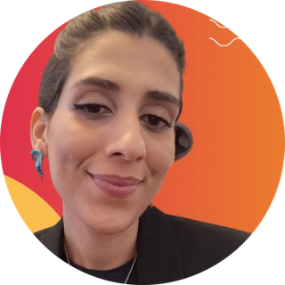

Os 5 passos, do zero
Como criar um listening que funciona desde o primeiro dia. Sem folha de cálculo e sem esperar que a crise rebente.
O cliente queixa-se no story, alguém da equipa tira uma captura de ecrã e partilha-a no grupo do WhatsApp, e é assim que fica a saber de uma crise...
40% das equipas de marketing ainda monitorizam a própria marca desta forma: à mão, em sobressalto, pela captura de ecrã do colega.
Isto acaba aqui. Preencha e assista
Cinco passos para sair da vigilância manual (visitar perfis, cruzar capturas de ecrã, esperar que o cliente avise) e deixar a monitorização a funcionar sozinha.
Como criar um listening que funciona desde o primeiro dia. Sem folha de cálculo e sem esperar que a crise rebente.
Por onde começar quando ainda não sabe bem o que escutar sobre a sua marca.
Como o alerta da Buzzmonitor o avisa antes de o problema virar captura de ecrã no grupo.

Executiva de Novos Negócios · Buzzmonitor
Social listening, atendimento e analytics do Grupo Elife, com IA nativa em todas as camadas.
Marcas que escutam connosco
Assista ao vídeo e perceba a melhor forma de o fazer.
Assistir ao vídeo agora